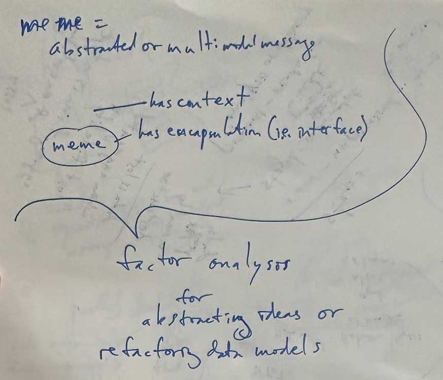
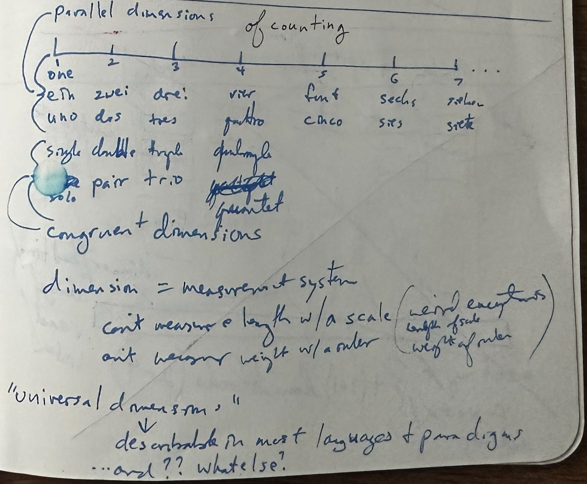

What is information?
- Information can be thought of as anything that can be stored or transformed--that is anything with a static or dynamic state.
- Examples:
- A book
- A page from a book
- A letter in a page from a book
- The paper the book was printed on
- The glue in the book's binding
- A rock
- The rock's surface
- Examples:
Everything can be treated as information
- Everything can be conceptualized as information.
- Everything can be thought of as a system or part of a system.
- Every system has a border
- If the border of a system is permeable then it has interfaces.
- #TODO: insert figure showing system vs not system + interface
- cardinal dimension: unique self-referencing entirety
- IS the information
- specific instance including all of its dimensions
- binary dimension (is or is not the information)
- approximated by assigned uuid
- IS the information
- A unit of information can be treated as a meme.
- 
Information has dimensionality
- 
Information has physical dimensions
-
Treat data and information as physical things.
- Benefits:
- Can use chemistry approach
- Can use physics approach
- Can use engineering approach
- Data metastructures
- atomic data
- molecular data
- mixtures/solutions of data
- Benefits:
-

-